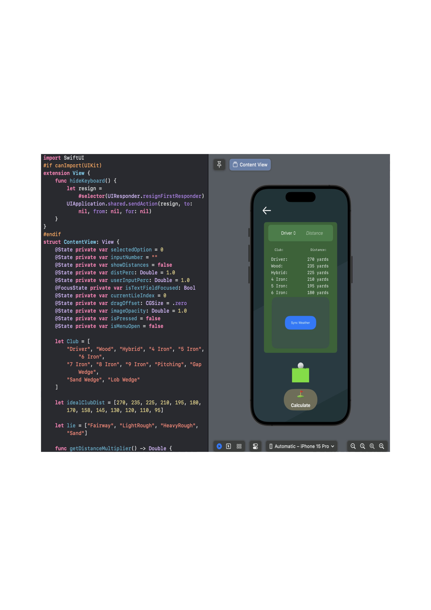

The Idea
Swung has been my favorite project to work on over the past couple months. It started with a problem that came to me while playing golf, I don't know what club to hit. Swung calculates how far each club in your bag goes based on only a single shot, taking into account the lie of the ball. I have enjoyed diving into IOS development as I get to explore UX and UI design with this prototype.
What I'm working on
Currently, I'm working on adding a weather syncing button that will gather the user's current location and the weather around them. This allows for more accurate shot predictions as weather plays a major part is a golf ball's trajectory. It is my dream to release this app to the public once I deem it ready.
◀

▶